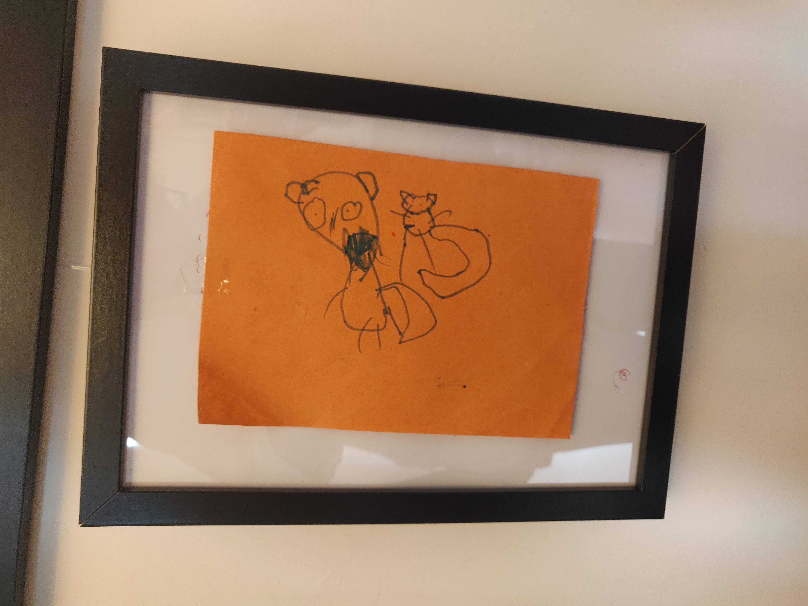
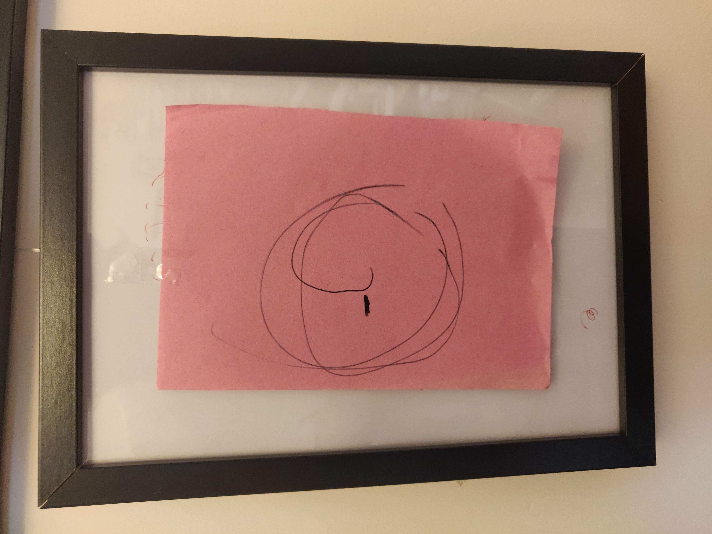
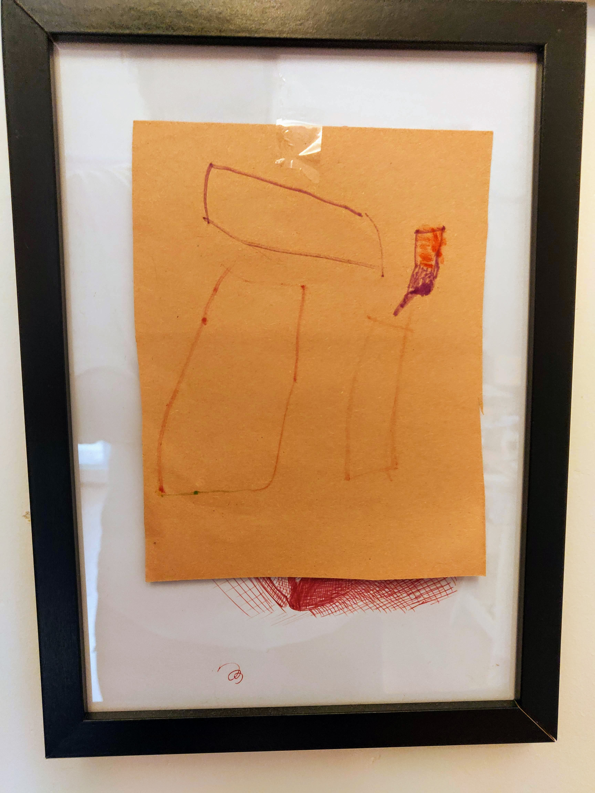
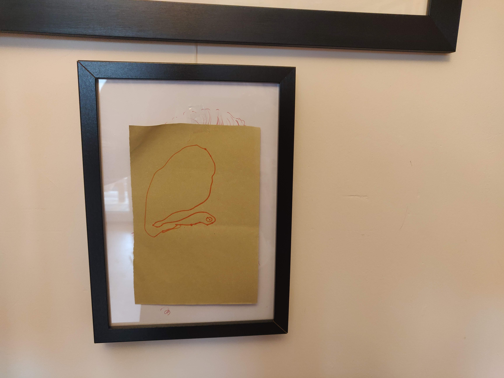

2020 saw the rise of a talented young artist, hailing from very South Of Here.
Binary Towers Gallery Gateshead is honoured to present four pieces showcasing her talent and range.
 "Man and Cat" explores the Alpha/Beta nature of the Feline Lead Relationship. See the expression of dread and self loathing as the man attempts to resist the cat, finally acknowledging his place in the domestic hierarchy.
 "Origins" depicts the artists roots, behind the belly button, within the ovarian bastille. Powerful emotions, the yearning for belonging and the duplicity of birth are traded against the human desires for freedom and self expression.
"Plain shapes" is a universally respected work, highlighting the juxtaposition of regularity and form. Despite appearing to be simple rectangles, each "shape" is infact contrcted of several individually drawn lines, which not only meet at corners as expected, but have termination points amid the sides and sweeps of each "shape"
On first glace "Snail" depicts the regular and expected form of a garden snail, but reflect on the outsized shell and pained expression of the creature. Is the artist pointing us to think about the financial burden on the housing market and the seemingly unending desire for home ownership?